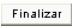
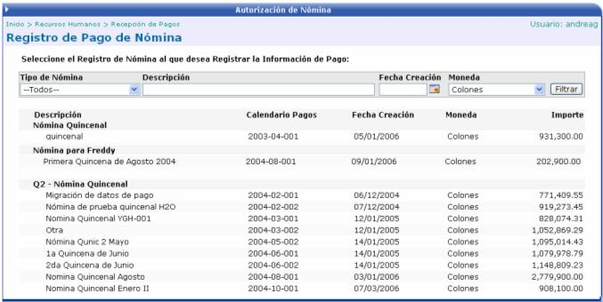
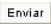
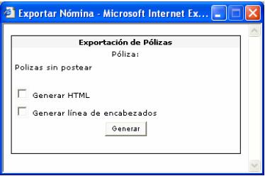

Registro de Pago de Nómina
En esta opción es donde se realiza el pago
de nómina de la empresa. Los registros que aquí se presentan son los generados
en el proceso de verificación anterior.
El usuario puede seleccionar las planillas
que desea pagar y luego puede presionar el botón

para
que se ejecuten los movimientos contables correspondientes al pago de
la planilla (siempre y cuando los parámetros generales de contabilización
se encuentren activados). Dicho botón solamente se activará, sí en el
módulo de Parámetros RH, en la
opción Configuración de Pago de Nómina,
se tiene parametrizado: RH
CON CONEXIÓN AL BANCO. Si se tiene cualquier otra opción diferente
a ésta, el botón no aparecerá en la pantalla.

Para proceder a efectuar el pago de nómina
se selecciona la planilla deseada y la aplicación reflejará la lista de
los empleados pertenecientes a esa nómina.
Si se quiere marcar todos los registros
como Pagados
se debe de presionar el botón ; pero si lo que se quiere
es marcar solamente algunos registros, se deben de seleccionar dichos
registros, activando el check a la izquierda de cada uno de ellos y presionar
el botón
; pero si lo que se quiere
es marcar solamente algunos registros, se deben de seleccionar dichos
registros, activando el check a la izquierda de cada uno de ellos y presionar
el botón  . El ícono
. El ícono  significa que el estado
del registro esta marcado como “Pagado”
significa que el estado
del registro esta marcado como “Pagado”
De lo contrario si el usuario lo que quiere
es marcar todos los registros como Rechazados,
se debe de presionar el botón  ; pero si lo que se quiere
es marcar solamente algunos registros, se deben de seleccionar dichos
registros, activando el check a la izquierda de cada uno de ellos y presionar
el botón
; pero si lo que se quiere
es marcar solamente algunos registros, se deben de seleccionar dichos
registros, activando el check a la izquierda de cada uno de ellos y presionar
el botón  . El icono significa que el estado
del registro esta marcado como “Rechazado”
. El icono significa que el estado
del registro esta marcado como “Rechazado”
Si algún empleado se marca como “Pagado”
significa, que el banco no reporto ningún inconveniente a la hora de depositarle
a ese empleado su planilla en la cuenta correspondiente. De lo contrario
si se marca algún empleado como
“Rechazado” significa,
que ocurrió algo y no se le pudo pagar a dicho empleado. Si se da un caso
de estos y se finaliza el proceso, presionando el botón , en el siguiente pago de nómina se crea automáticamente una
incidencia por el monto de la planilla que no se le pago.

Si se presiona el botón de

, se mandan las boletas de pago por correo electrónico a cada
uno de los empleados seleccionados, con la información de la planilla.
Cabe recordar que si los empleados no tienen cuenta de correo empresarial,
dichas boletas de pago le llegaran a la cuenta de correo del usuario administrador
del sistema de nómina (ver manual Parámetros RH).
Si por algún motivo se olvida mandar las
Boletas de Pago desde esta opción, también se pueden mandar desde la Consulta
Histórica de Boletas de Pago y desde la Consulta de Expediente (botón
Pagos), en el módulo de Expediente y Nómina (ver manual de Expediente
y Nómina).
Luego que se han marcado los registros
como Pagar o Rechazar,
se debe de presionar el botón para que se ejecuten los
movimientos contables correspondientes al pago de la planilla.
El botón de  carga la información
de las pólizas en formato HTLM (si se activa el check) o en un archivo
de texto txt (si no se activa el check)
carga la información
de las pólizas en formato HTLM (si se activa el check) o en un archivo
de texto txt (si no se activa el check)
